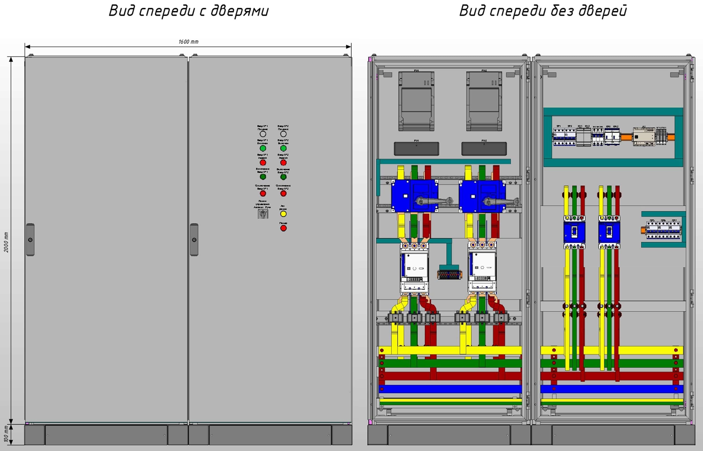
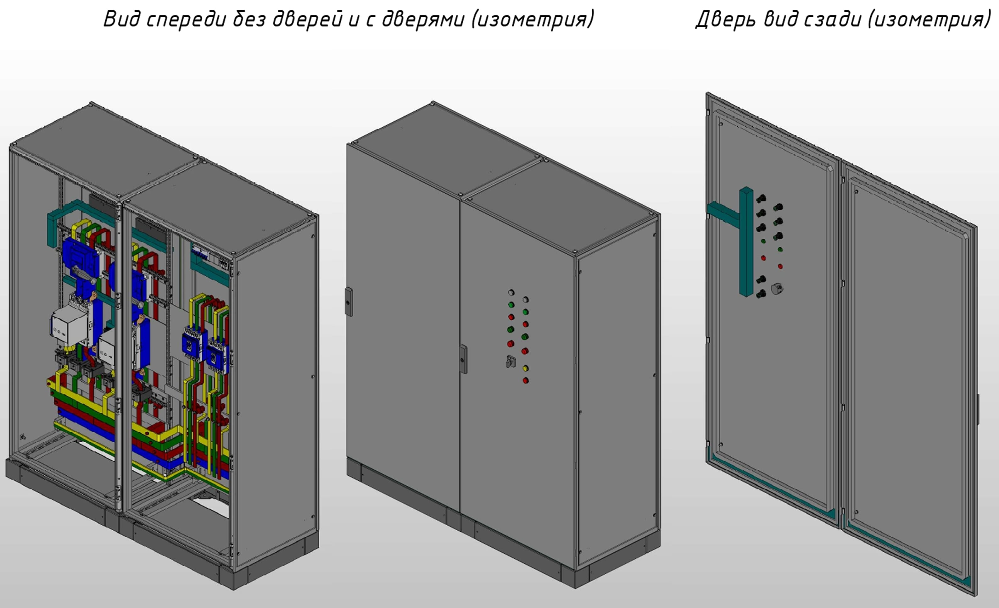
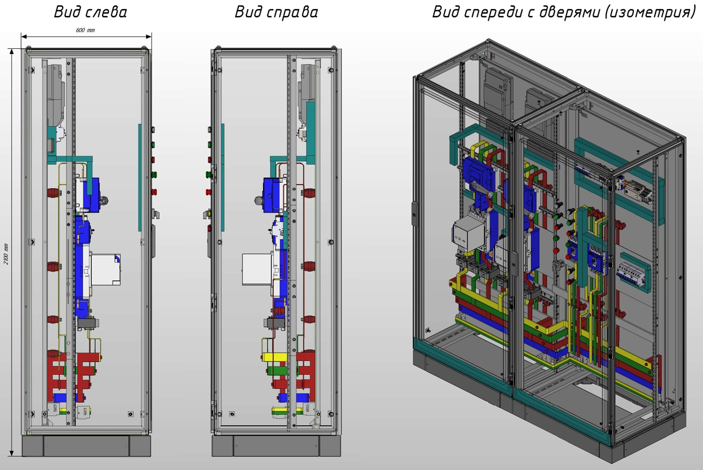
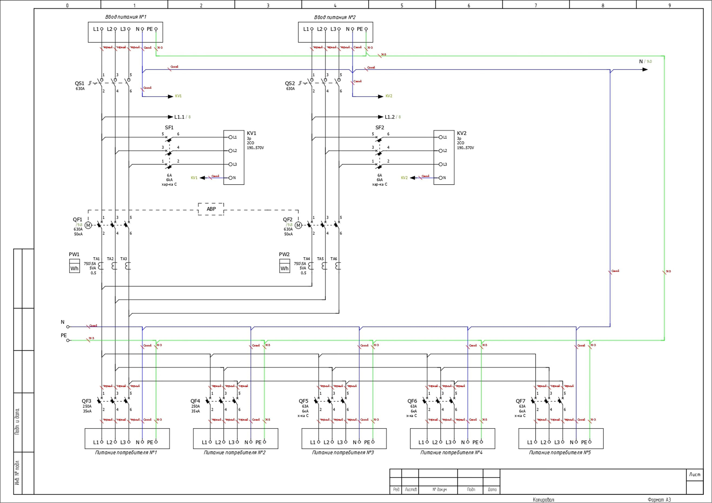
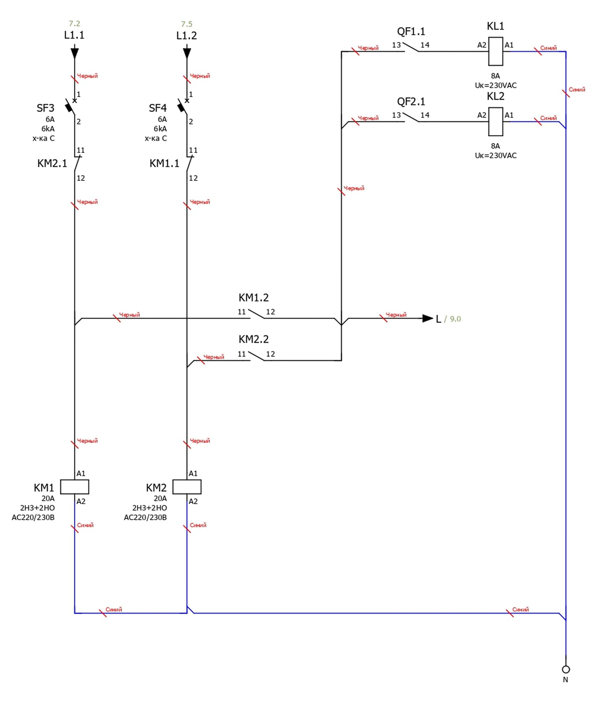
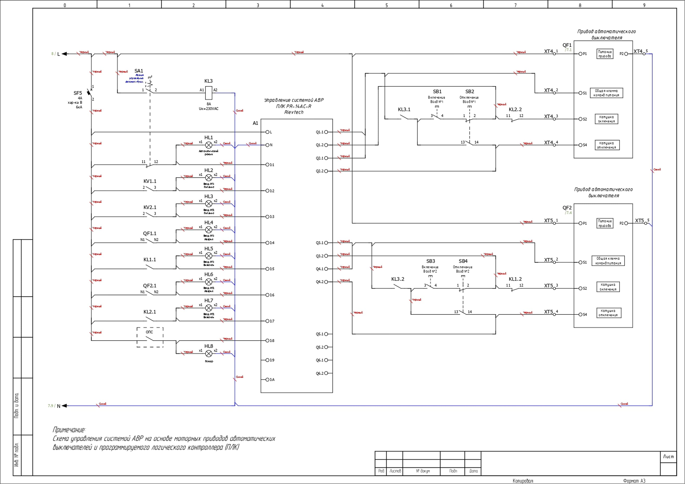
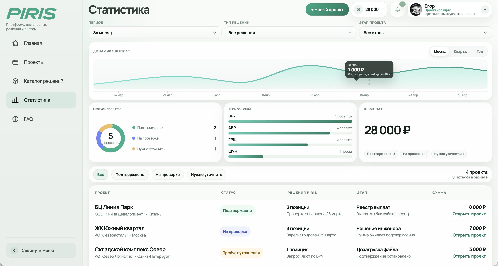

Получите доступ к каталогу решений, документации и регистрации проектов.
Личный кабинет для проектировщиков
готовые решения НКУ
Рабочая среда, где проектировщик быстрее находит готовые решения, берёт документацию в проект и держит связь с инженерами PIRIS.
Проектируйте НКУ быстрее Выпускайте больше проектов Зарабатывайте вместе с PIRIS
PIRIS — платформа готовых решений НКУ для проектировщиков и проектных компаний. Используйте проверенные шкафы АВР, ВРУ, ГРЩ и шкафы управления в своей документации, получайте готовые материалы для проекта и фиксированное вознаграждение после прохождения экспертизы / стадии Р.
Инженерная база PIRIS уже собрана внутри кабинета
Проектировщик заходит не в пустой каталог, а в рабочую базу типовых решений НКУ: АВР, ВРУ, ГРЩ, ШУН, ШУЗ, ЩИБП, однофазные АВР и другие шкафы, которые можно быстрее заложить в проект.
База постоянно растёт: каждую неделю команда PIRIS добавляет документацию на новые решения, чтобы проектировщик быстрее закрывал и техническую, и сметную часть проекта.
Обновляется каждую неделю
новые решения + рабочие файлы
8 000+
типовых решений НКУ в базе PIRIS
5 000+
файлов: спецификации, схемы, габариты, 3D и внешние виды
Документация
Материалы, которые проектировщик может сразу брать в работу
Габаритные чертежи ВРУ с АВР показывают размеры, компоновку и привязки, которые нужны для включения решения в проект.
3D вид помогает быстро оценить исполнение шкафа, расположение аппаратов и внешний облик решения до выпуска документации.
Дополнительный 3D ракурс показывает конструкцию ВРУ с АВР наглядно, чтобы проектировщику было проще согласовать решение.
Принципиальная схема раскрывает электрические связи, состав аппаратов и логику работы решения.
Схема мини-АВР питания цепей управления помогает проверить вспомогательные цепи и питание автоматики.
Схема управления АВР и индикации ВРУ с АВР показывает работу автоматики и сигнальные цепи внутри решения.






Личный кабинет
Личный кабинет проектировщика PIRIS – возможности платформы



Как проектировщик зарабатывает с PIRIS
Вы закладываете типовые решения PIRIS в проектную документацию, регистрируете объект в личном кабинете и передаёте его на проверку. После подтверждения уникальных артикулов в документации и прохождении экспертизы платформа начисляет вознаграждение.
Проектируемый объект
Вы
Отдел снабжения конечного заказчика
Ген.подрядчик
Участники тендерных закупок
4 шага до первой выплаты
Укажите объект, стадию, регион, заказчика и загрузите проектную документацию.
Выберите АВР, ВРУ, ГРЩ или шкафы управления из каталога и привяжите их к проекту.
После проверки проекта PIRIS начислит вознаграждение за подтверждённые уникальные артикулы.
FAQ
Коротко о правилах участия
Кому подходит платформа?
Проектировщикам НКУ и проектным компаниям, которые закладывают в документацию АВР, ВРУ, ГРЩ, ШУН и другие шкафы управления.
Когда начисляется выплата?
После подтверждения, что решение PIRIS прошло экспертизу / стадию Р.
Нужно ли ждать фактической закупки оборудования?
Нет. Выплата начисляется после подтверждения, что решение PIRIS прошло экспертизу / стадию Р. Дальнейшая закупка зависит от заказчика, генподрядчика или снабжения.
Можно работать от проектной компании?
Да. Формат участия, реквизиты и получатель выплат указываются в кабинете.
Какие документы нужны для проверки?
Обычно достаточно данных по объекту, стадии проекта, выбранных артикулов PIRIS и загруженной проектной документации.
Что делать, если нужны технические уточнения?
Внутри проекта есть диалог с инженерами PIRIS, где сохраняется контекст проверки.
Готовые решения должны ускорять проект, а не усложнять закупку
Используйте PIRIS как рабочий слой между проектированием НКУ, документацией, инженерной поддержкой и прозрачной системой выплат.